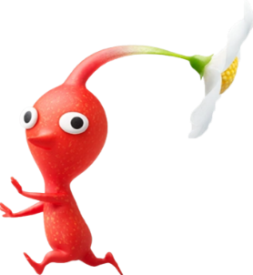
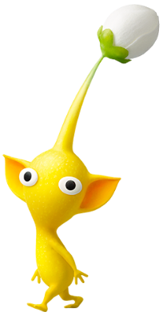
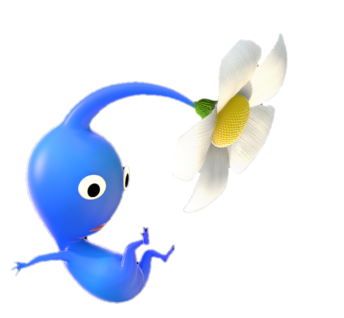
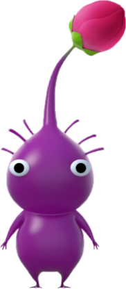
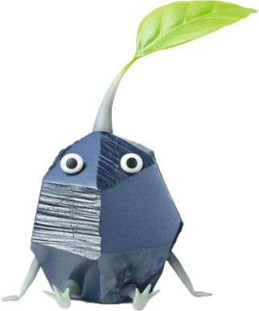
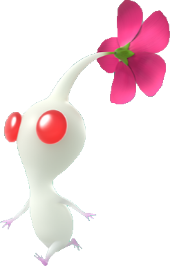
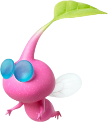
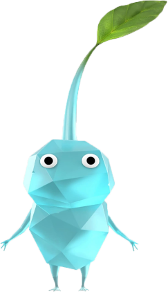

당신의 모험을 도와줄
피크민을 소개합니다!
피크민을 소개합니다!
특징으로는 색이 붉은색이고
뾰족한 코와 같은 돌기가 달려 있다.
불타기 어려운 세포로 되어 있기에
불이나 열에 면역을 가진다고 한다.
뾰족한 코와 같은 돌기가 달려 있다.
불타기 어려운 세포로 되어 있기에
불이나 열에 면역을 가진다고 한다.
빨강피크민

특징으로는 색이 노란색이고
커다란 귀와 같은 주름이 달려 있다.
전기에 면역이며, 이를 이용해
끊어진 전선을 연결할 수 있다.
커다란 귀와 같은 주름이 달려 있다.
전기에 면역이며, 이를 이용해
끊어진 전선을 연결할 수 있다.
노랑피크민

특징으로는 색이 파랑색이고 입이 달려 있다.
입처럼 생긴 아가미를 이용하여
물 속에서 숨을 쉴 수 있고 물에 면역이다.
아가미로 웃는 표정을 짓는 것도 가능하다.
입처럼 생긴 아가미를 이용하여
물 속에서 숨을 쉴 수 있고 물에 면역이다.
아가미로 웃는 표정을 짓는 것도 가능하다.
파랑피크민

특징으로는 가장 덩치가 크며 무겁고
던졌을 때 올라가는 높이가 가장 낮다.
이동속도가 제일 느리지만, 힘이 매우 세다.
몸무게가 무거워 던졌을 때의 공격력이 강하다.
던졌을 때 올라가는 높이가 가장 낮다.
이동속도가 제일 느리지만, 힘이 매우 세다.
몸무게가 무거워 던졌을 때의 공격력이 강하다.
보라피크민

특징으로는 몸이 회색이며,
이름 그대로 몸이 각진 돌 형태로 이루어져 있다.
단단한 몸 덕분에 찌르는 공격에 면역을 가지며,
같은 단단한 물체를 부숴버릴 수 있다.
이름 그대로 몸이 각진 돌 형태로 이루어져 있다.
단단한 몸 덕분에 찌르는 공격에 면역을 가지며,
같은 단단한 물체를 부숴버릴 수 있다.
바위피크민

특징으로는 색이 흰색이고,
선홍색의 눈을 가지고 있다.
기본적으로는 등장하질 않고,
다른 피크민을 뻥튀기초에 던져서 만들 수 있다.
선홍색의 눈을 가지고 있다.
기본적으로는 등장하질 않고,
다른 피크민을 뻥튀기초에 던져서 만들 수 있다.
하양피크민

특징으로는 몸이 분홍색이며,
이름 그대로 날개가 달려 있다.
몸에는 벌레처럼 줄무늬가 있다.
이름 그대로 날개가 달려 있다.
몸에는 벌레처럼 줄무늬가 있다.
날개피크민

특징으로는 몸이 하늘색이며,
이름 그대로 몸이 각진 얼음으로 이루어져 있다.
원주생물이나 수면에 던지면
대상을 얼릴 수 있다.
이름 그대로 몸이 각진 얼음으로 이루어져 있다.
원주생물이나 수면에 던지면
대상을 얼릴 수 있다.
얼음피크민
